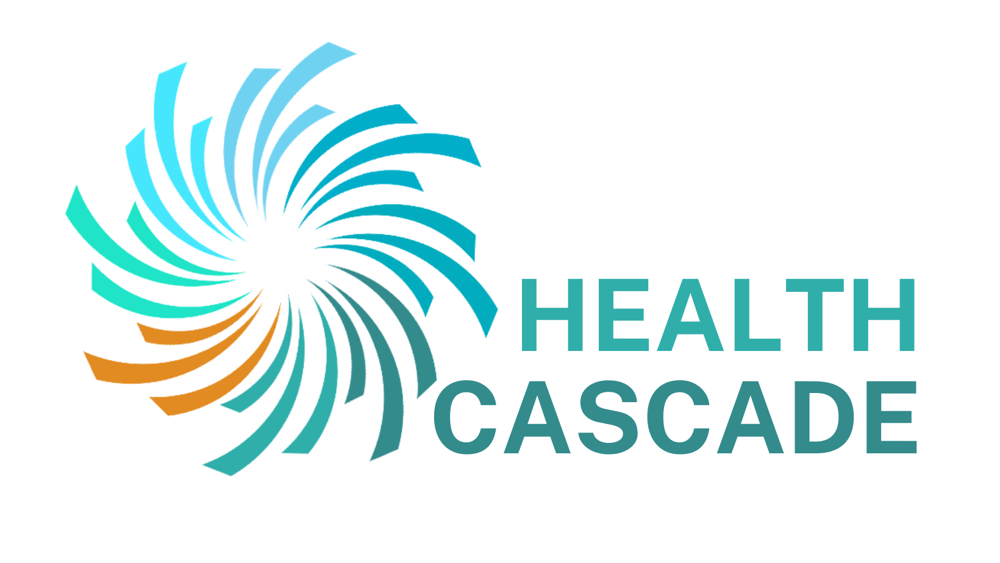

The power of case study methodology. Lessons from expert interviews. Aspirations for open science.

Lessons from my first study
Vinayak Anand Kumar 1, 
1 School of Business, Social & Decision Sciences | Jacobs University
A real “Hard Case”
Reviews of digital health tools have demonstrated that few get implemented, and even fewer are maintained (Yeager, 2018). This hasn’t stopped researchers and developers from studying and building digital tools that either facilitate or enable the delivery of health care services. In order to increase the chances of future tools succeeding, there is value in exploring the experiences of previous teams and projects. That is:
- What were the facilitating factors of co-creating digital health tools?
- How did the facilitating factors affect the co-creation process?
- What were the challenges of co-creating digital health tools?
- How did the challenges affect the co-creation process?
Using case study methodology, with a multi-case adaptive design, I am exploring these research questions in the co-creation of an obstetrics web app, a cardiovascular rehabilitation native app and a long covid chatbot. Case studies are an ideal method when (Yin, 2018):
- Your are looking to understand complex situations (i.e. how/ why)
- You have access to a range of data sources that can provide rich detail about each case
- Your focus is to get a real world perspective
To be an expert, listen to the experts
One of the methods employed to gather information about each case, with respect to the research questions, was the expert interview. Experts are people that are knowledgeable about a particular subject; and can be identified by holding a particular position, through membership to a project/ team, or by status.
The expert interview is a method for getting information about a particular field of interest (Bogner, 2009); ideal for drawing on the experiences and insights of people that have been involved in the research and development of digital health tools. The lessons I learnt from carrying out the expert interviews were:
- Do your homework
- Practice, Practice, Practice
- Build rapport
- Ensure your interviewee feels safe
- Be willing to adapt
Open Science
“a piece of knowledge, unlike a piece of physical property, can be shared by large groups of people without making anybody poorer.”
My goal is for other researchers to apply/ replicate my methods with as little cost as possible. Over the past few months, I’ve come across some tools that may also help you in your research.
| stage | tool |
|---|---|
| design | open science framework |
| collect | open broadcast studio |
| process | quali anon |
Resources
Please scan the QR code for:
- Insights from the data and literature
- Reference list
- Links to resources/ tools mentioned
- Code used to create the poster

Health CASCADE is a Marie Skłodowska-Curie Innovative Training Network funded by the European Union’s Horizon 2020 research and innovation programme under Marie Skłodowska-Curie grant agreement n° 956501